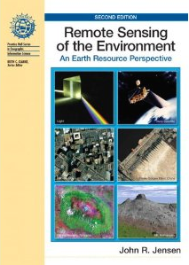

GEOG*2420
The Earth From Space
Course Introduction
John Lindsay
Fall 2015
Who Am I?
- Dr. John Lindsay
- Email: jlindsay@uoguelph.ca
- Office: 346 Hutt Building
- Office Hours: Monday 11:30 - 1:00 and Wednesdays 11:30 - 1:00
GTA's
- Responsible for running the labs
- Joshua MacDougall (jmacdo20@uoguelph.ca)
- Matthew Williamson (williamm@uoguelph.ca)
- You can attend any GTAs office hours if you have a question.
- They will post their office hours to the CourseLink page.
Where does this course fit in?
- 2nd Year: GEOG2420 (RS & photogrammetry) & GEOG2480 (GIS & cartography)
- 3rd Year: GEOG3420 (RS analysis) & GEOG3480 (GIS analysis)
- 4th Year: GEOG4480 Advanced Geomatics
By the end, you should be able to:
- Understand the history and foundational theories behind the field
of Earth Observation (EO).
- Gained a basic knowledge of the main EO systems,
technologies and data sets.
- Analyze imagery data using EO software.
- Understand photogrammetric techniques and practices and the method of
formal image interpretation.
- Identify the key application areas in EO.
- Practice communicating concepts through formal written and visual forms.
Course Overview
- Two hours of lectures each week (Mondays and Wednesdays)
- 3 hours of laboratory sessions
- Labs start in Week 2, i.e. next week
- Labs will be held in the computer lab in the Hutt building Rm. 236
Course Overview
- Fee for printing $10.00
- Each lab will use the Whitebox Geospatial Analysis System software.

Course Overview
- Readings will be mainly drawn from John Jensen (2006) but I will
sometimes refer to other materials.
- $221.75 at bookstore (cheaper on Amazon)
- I've placed a copy on reserve in the library (still awaiting aproval).
Readings
Although not all material covered in the assigned readings will be covered in
the lectures, it is important and is testable (mid-terms and final examination).
Method of Evaluation
- Lab assignments 40%
- Late penalty is 10% per day
- Mid-term 25% (Wed. Oct. 14, in class)
- Final Exam 35%
- Scheduled for Mon. Dec. 7 8:30-10:30AM, Room TBA
Course Materials
- Link from ‘Courselink’ on UoG homepage
- The course syllabus is now posted. You must read this.
- Used to provide online course materials, discussion, and a place for grades
- Use your central account ID and password (same login ID and password that is
used for University of Guelph WebMail and WebAdvisor)
A note on the schedule...
The last day of classes is on Thursday December 3 to
make up for the lost Monday due to Thanksgiving.
What's this all about?
- This course introduces students to Earth imaging and image
interpretation
- It provides a foundation for further courses in Geomatics
(e.g. Remote Sensing and GIS)
- Geomatics is the discipline of gathering, storing, processing,
and delivering geographic information, or spatially referenced
information
- Related to Geospatial Analysis, the common method that
links all of Geography’s sub-disciplines